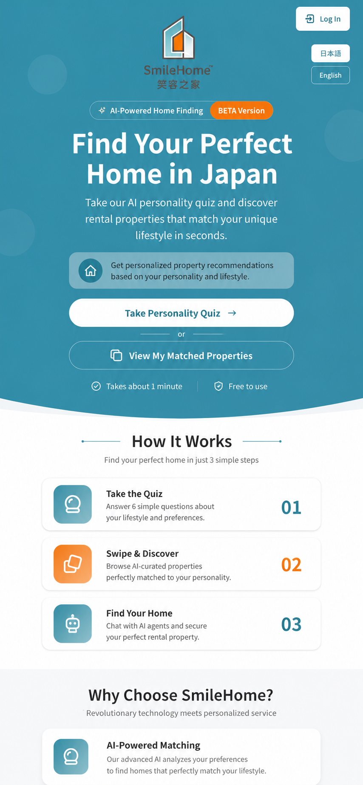

01
SwipeHome
A nine-week software engineering internship improving a bilingual housing platform through responsive UI, localization, credibility, and QA.
- Quiz results and matched-property layouts
- Testimonial and landing-page redesigns
- Next.js, MUI, Firebase, Figma
